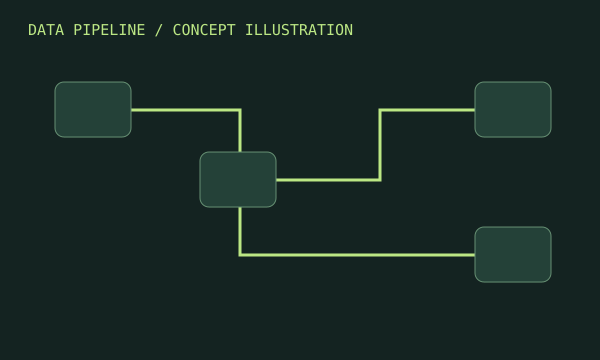
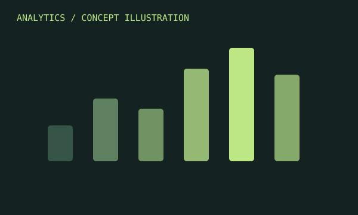
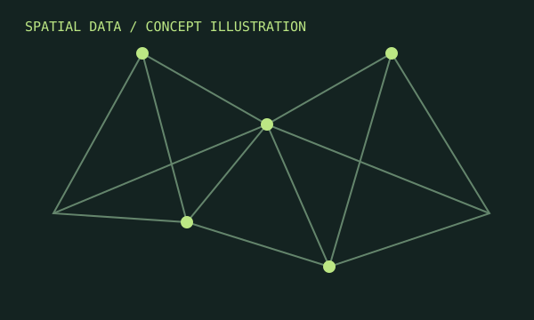

Build & analyse
Python, Pandas, NumPy, OpenCV, SQL, BigQuery and PostgreSQL.
EXPERIENCE / TOOLS / SELECTED WORK
A selection of work from my internships, alongside the tools I use to explore and communicate data.
| Visual | Contribution | Tools | Context |
|---|---|---|---|
|
 |
Advertising data pipelineBuilt an automated pipeline to integrate and deduplicate advertising performance data across seven platforms, using first-touch attribution. |
BigQuery SQL |
Jotform
Ad Intelligence Internship August 2026 |
|
 |
Marketing funnel dashboardDesigned a dynamic dashboard with funnel logic to help marketing teams track business value and reduce manual data pulls. |
Looker Studio Funnel analysis |
Jotform
Ad Intelligence Internship August 2026 |
|
 |
Mapping & cadastral supportAssisted with drawing and spatial data processing for mapping and cadastral projects. |
QGIS NetCAD |
Uzel Mapping
Internship July–August 2025 |
MY TOOLKIT
Python, Pandas, NumPy, OpenCV, SQL, BigQuery and PostgreSQL.
QGIS, NetCAD, GeoServer and PostGIS.
Looker Studio, Excel, dashboard design, funnel analysis and attribution analysis.
THE JOURNEY SO FAR
Jotform
Automated data pipelining and business intelligence development for advertising analytics.
Uzel Mapping, Engineering, Architecture and Consultancy
Spatial data processing and drawing support for mapping and cadastral projects.
Gini Talent
Contributed to search optimisation tasks and improvements to user experience.
Türk Japon Vakfı
Directed the waitstaff team and supported efficient daily operations.
EDUCATION
Bachelor's studies in Geomatics Engineering
High school · 2015–2019
CONTINUED LEARNING
Google: Ads Search Professional, Ads Search and Analytics · August 2026.
Jotform: Foundations, Apps, Explore Jotform Sign, Healthcare Digitization and Automation Basics · July 2026.